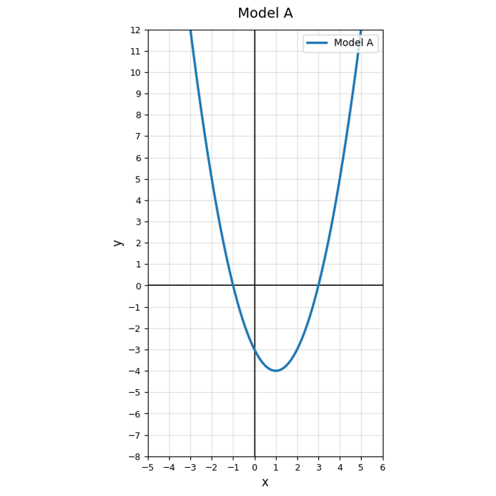
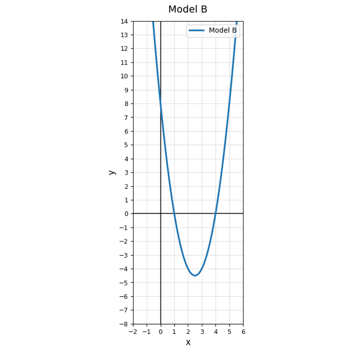

Solve using the Zero Product Property.
$$(x-4)(x+7)=0$$
Solve.
$$3(x-5)(2x+1)=0$$
Factor, solve, and check one solution.
$$x^2-9x+20=0$$
Use Model A. Estimate the solutions to the equation represented by the graph. Explain how the solutions connect to $x$-intercepts.

Classify each equation as standard, vertex, or factored form.
Which feature is easiest to identify from $y=(x+8)(x-1)$?
For $y=(x+2)^2-5$, identify the vertex.
In $y=2x^2-5x+7$, identify $a$, $b$, and $c$.
You need to find the zeros of a quadratic. Which form would usually be most efficient: standard, vertex, or factored? Explain.
Compare $y=x^2-4x-12$ and $y=(x-6)(x+2)$. What feature is easier to see in the second form?
A student says, “Standard form is always best because it looks most expanded.” Critique this statement using at least one feature of a quadratic.
A coach wants to know when a ball hits the ground and when it reaches maximum height. Explain which quadratic forms would be most useful for each question and why.
Find the zeros of $y=(x+3)(x-8)$.
Use Model B. Estimate the $x$-intercepts.

Write a factored equation for a quadratic with zeros $-6$ and $2$.
In a break-even context, what could the zeros of a quadratic model represent?